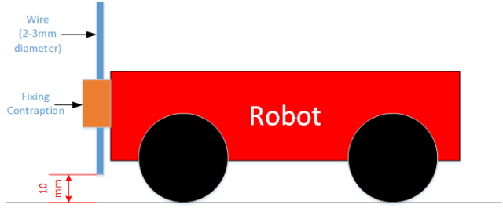

İki robot, operatörün sürüş becerilerini ve robotun manevra kabiliyetini test edecek tahribatsız bir düelloda birbirleriyle karşı karşıya gelecek.
Karşı takımın robotuna takılan balonları patlatmak için, robotlara takılan metal telin ucundaki iğneler kullanılmalıdır.
Duellolar, robotların sahayı terk etmesini engellemek için, etrafı kısa duvarlarla çevrili bir arenada yapılacaktır.
Yarışmacılar arenaya hiç bir zamanda giremezler. Kablo bağlantılarıyla ilgili herhangi bir işlem için robotların sahanın kenarlarına sürülmesi gerekir. Arenaya girmenin sonuçlarında düellonun kaybedilmesi durumu olabilir.
Kasıtlı olarak olduğunuz yerde dönemezsinz, eğer hakem bunu yaptığınız hissine kapılırsa size bir uyarı verecektir. İkinci bir uyarı alınması durumunda takımınız malup sayılıcaktır.
Eğer 3 dakikanın sonunda, herhangi bir robot galip gelmezse, kararı, kontrol ve agresifliği değerlendiren oyun hakemi verecektir.
Başka bir robota verilen kasıtlı zarar, diskalifiyeye sebep olur. Zarar vermemeye özen göstermek, robotların sürücülerinin görevi.
Hakemin kararı sondur.
Lütfen tarışmayın - unutmayın, bu yarışmaların eğlenceli olması gerekiyor.
Takımınızdan birinin duelloyu kayıt etmesi (bir telefonla olabilir) tavsiye edilir. Bu sayede, hakem görsel kanıtlardan yararlanabilir.
Yarışmacı sayısından dolayı, bazı robotlar bir sonraki tura veda etmek durumunda kalabilir. Bu robotlar rastgele seçilecek ve yarışmadan önce açıklanacak.
Ek Parça

Robotunuz, çapı 3 mm olan bir teli yerden 1 cm yukarıda tutabiliyor olamalı.
Tel robotunuzun önüne, ortaya, önünde başka bir şey olmayacak şekilde takılmalıdır.
Telin ağırlığı yaklaşık olarak bir askının ağırlığının yarısı kadar olacak
Tel size yarışma gününde verilecek
Tel sadece The wire only needs to be on the robot during the duels in which you take part
Eğer tel robottan düşerse en fazla 2 kere olacak şekilde teli robotunuza geri takmanıza izin verilecektir.
Eğer tel 3. kere düşerse, turu kaybetmiş sayılacaksınız.
Düşen teli ve robotu sahadan alma yetkisi sadece oyunun hakemindedir.
Puanlama
Her turun kazananı 30 puan alacak ve bir sonraki tura katılma hakkı kazanacaktır.
Finaliste 25 bonus puan kazanacaktır
Finalin kazananı 40 bonus puan alacaktır.
İpuçları
Ek parça (tel) robotun denge merkezini yükselterek dengeyi bozabilir. Robotunuzu tasarlarken bunu aklınızda bulundurun.
Ek parçanın takılacağı kısmı robotunuza sağlam taktığınıza emin olun.
PiWars’ın temin ettiği ek parça tutucusunu kullanmak zorunda değilsiniz, fakat kullanacağınız parçanın kablonun dönmesine izin vermediğine emin olmanızı şiddetle öneririz çünkü dönen kablolar robotun ağırlık merkezini değiştirerek nişan almayı çok zorlaştırıyor.